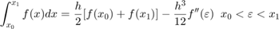
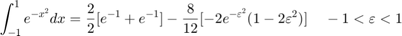
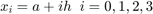
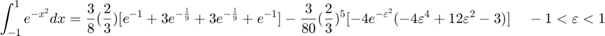
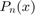
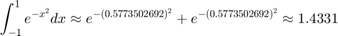
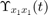

Práctica 6: Convolución y Correlación de señales
Contents
Integrantes
Portillo Martínez Arturo
Objetivos
- Conocer métodos básicos de integración numérica.
- Manipulación de instrucciones en MATLAB.
- Simular convoluciones y correlaciones de señales continuas.
- Simular convoluciones y correlaciones de señales discretas.
Introducción
Métodos numéricos de integración
1. Integración

El teorema fundamental del cálculo (en una de sus funciones). Si f es integrable, y
Encontrar F es difícil o imposible. (técnicas de integración, cambio de variable, integración por parte,etc.)
Se aproxima utilizando polinomios, por ejemplo:
con
Aproxiamremos con el polinomio  teniendo:
teniendo:
x = -1:0.001:1; f = @(x) exp(-x.^2); P = 1; figure() plot(x,f(x),'LineWidth',0.3); title('Ejemplo'); xlabel('x'); ylabel('Función'); grid; axis([-1 1, 0, 2]) hold on yline(P,'r','LineWidth',0.3) legend("f(x)","P(x)") ax = gca; ax.XAxisLocation = 'origin'; ax.YAxisLocation = 'origin'; ax.Box = 'off'; hold off
2. Fórmulas cerradas de Newton-Cotes
Se utilizan los polinomiso de interpolación de lagrange
existe
con
Fórmula cerrada de (n+1) puntos de Newton-Cotes
Regla del trapecio (n=1)

- (paso)

Regla de Simpson (n=2)
- (paso)
Regla de tres octavos Simpson (n=3)
- (paso)
- 
-


3. Fórmulas cerradas de Newton-Cotes Compuestas
Regla compuesta del trapecio
- n número de subintervalos.
- (paso)
Con n = 10 tenemos h = 0.2
Regla compuesta de Simpson
- n par número de subintervalos.
- (paso)
Con n = 10 tenemos h = 0.2
3. Cuadratura gaussiana
% 2n parámetros
- Polinomios de Lagrange.
- Polinomis de Legendre.
Teniedo:
-  polinomio de Legendre de grado n
- de
- P(x) con grado menos que 2n
Teniendo como resultado
Con n=2

Con n=3

Desarrollo
Resolver cada uno de los siguientes problemas:
- Para el PR04 reporte la grafica de la simulación númerica de la convolución y compare con el resultado análitico que obtuvo para el problema 1, esto es, su práctica tendrá que incluir una llamada a la funciónn convconm y posteriormente se tendrá que mostrar (mediante el Publish) la gráfica tanto de las señales involucradas como el resultado de la convolución, y en esta última gráficara su resultado analitico, se tendrá que incluir el resultado analitico.
- Para el PR05 reporte la grafica de la simulación númerica de la correalción y compare con el resultado análitico que obtuvo para el problema e), esto es, su práctica tendrá que incluir una llamada a la funciónn convconm y posteriormente se tendrá que mostrar (mediante el Publish) la gráfica tanto de las señales involucradas como el resultado de su correlación, y en esta última graficara su resultado analitico, se tendrá que incluir el resultado analitico.
- Realice la simuación de la convolución de las señales (c) con (d) del problema 3.1-1
- Realice la simuación de la correlación de las señales (c) con (d) del problema 3.1-1
- Realice la la convolución de las señales (c) con (d) del problema 3.1-1 utilizando el comando conv de MATLAB, muestre el código utilizado y gráfique el resultado, sugerencia: Utilice las propiedades de traslación de la convolución.
Problema 1
Para el PR04 reporte la grafica de la simulación númerica de la convolución y compare con el resultado análitico que obtuvo para el problema 1, esto es, su práctica tendrá que incluir una llamada a la funciónn convconm y posteriormente se tendrá que mostrar (mediante el Publish) la gráfica tanto de las señales involucradas como el resultado de la convolución, y en esta última gráficara su resultado analitico, se tendrá que incluir el resultado analitico.
Realiza la convolución de las siguientes señales:
t =-2:0.001:2; f = @(t) exp(-t).*(t>=0 & t<=1); g = @(t) t.*(t>=-1 & t<=1); figure() plot(t,f(t),'LineWidth',1); title('Función f(t)'); xlabel('t'); ylabel('f(t)'); grid; axis([-2 2,-1,2]) ax = gca; ax.XAxisLocation = 'origin'; ax.YAxisLocation = 'origin'; ax.Box = 'off'; figure() plot(t,g(t),'LineWidth',1); title('Función g(t)'); xlabel('t'); ylabel('g(t)'); grid; axis([-2 2,-2,2]) ax = gca; ax.XAxisLocation = 'origin'; ax.YAxisLocation = 'origin'; ax.Box = 'off';
Se tiene las siguientes 2 señales con su convolución en analítico:
f(t)
g(t)
y(t)
f = @(t) exp(-t).*(t>=0 & t<=1); g = @(t) t.*(t>=-1 & t<=1); convconm(f,g)
Problema 2
Para el PR05 reporte la grafica de la simulación númerica de la correalción y compare con el resultado análitico que obtuvo para el problema e), esto es, su práctica tendrá que incluir una llamada a la funciónn convconm y posteriormente se tendrá que mostrar (mediante el Publish) la gráfica tanto de las señales involucradas como el resultado de su correlación, y en esta última graficara su resultado analitico, se tendrá que incluir el resultado analitico.
Realiza la autocorrelación de
Se tiene la señal con su autocorrelación en analítico:

f = @(t) 1*(t<=0)-2*(t<=-3)+1*(t<=-4); g = @(t) 1*(t>=0)-2*(t>=3)+1*(t>=4); convconm2(f,g)
Problema 3
Realice la simulación de la convolución de las señales (c) con (d) del problema 3.1-1
n=-3:3; a=[-9 -6 -3 0 3 6 9]; b=[0 4 2 0 2 4 0]; convdisc([n;a],[n;b])
Problema 4
Realice la simuación de la correlación de las señales (c) con (d) del problema 3.1-1
n=-3:3; a=[-9 -6 -3 0 3 6 9]; b=[0 4 2 0 2 4 0]; convdisc2([n;a],[n;b])
Resulta ser que la convolución y la correlación tienen el mismo resultado ya que el espejo de la segunda función es la misma que la original.
Problema 5
Realice la la convolución de las señales (c) con (d) del problema 3.1-1 utilizando el comando conv de MATLAB, muestre el código utilizado y gráfique el resultado, sugerencia: Utilice las propiedades de traslación de la convolución.
figure() a=[-9 -6 -3 0 3 6 9]; b=[0 4 2 0 2 4 0]; w=conv(a,b,"full"); m = (length(w) - 1)/2; n= -m:m; stem(n,w,'LineWidth',3); title('Función r(t)'); xlabel('t'); ylabel('r(t)'); grid;